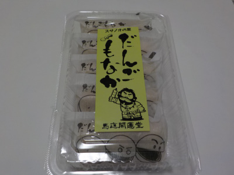
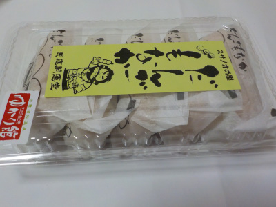
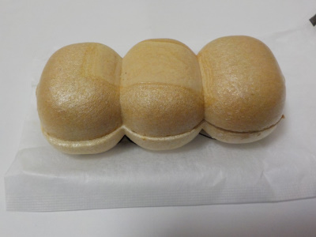
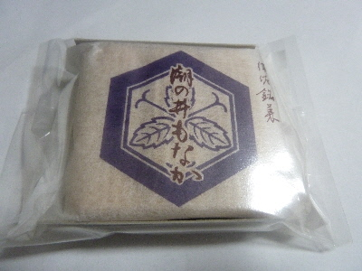
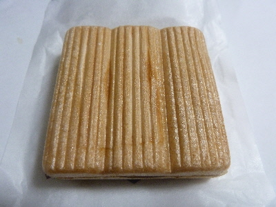
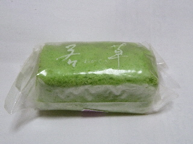

お正月にだんご最中を食べました。
2022/01/03

今日は予定がないので家でのんびりお菓子を食べました。
なめらかで上品な甘さのこしあんが美味しいですね。
美味しいお菓子が食べれるよう、今年も真面目に働こうって思いました.
島根県出雲市佐田町1440番地14
2022/01/03

今日は予定がないので家でのんびりお菓子を食べました。
なめらかで上品な甘さのこしあんが美味しいですね。
美味しいお菓子が食べれるよう、今年も真面目に働こうって思いました.
2019/01/04
須佐神社に行ったときに買って帰りました。

普通の丸型や四角い最中より食べやすくていいです。

オフィシャルホームページによると、団子三兄弟ではなく団子三兄妹だそうです。
ふーん。
いつも思うんですが、中のこしあんが美味しかったです。
2017/10/07
最中のパッケージがカッコイイです。
なんか歴史を感じますね。

最中は3つに分けれるようになっているので、食べやすい細長いサイズにして食べれます。

最中の餡子が美味しかったです。甘いんだけど、重くなかったです。
2011/07/07
真庭開運堂でも若草ってあるんですね。

ここのは個包装なので、袋を開けてそのまま簡単に食べれました。
お皿とか、ナイフみたいなのがいらないのは楽でいいですね。
緑色の粉粉なところが少ないのも、食べやすかったです。
2006/5/6
だんごもなかって言っても、最中の中に団子は入っていませんでした。入っているのはなめらかなこし餡で、最中自体が団子の格好に出来てるだけでした。
団子-●●●-の格好なので、ポキポキって折って団子を一個単位に分けれます。
一口サイズでパクって食べれるので、粉がポロポロ落ちないし、口にくっついたりしないので、食べ易かったです。いいアイデアですね。
2005/5/25
出雲市佐田町にある馬庭開運堂さんの「潮の井もなか」をいただきました。餡がとっても甘かったです。
馬庭開運堂さんはホームページがあるんですね。
私は実際にお店に行った事がなかったので、お店の様子がちょっとわかって良かったです。
お店のホームページって、お店の歴史やこだわりなどが色々わかっていいですね。
よそのお店のホームページも今度探して見てみたいです。